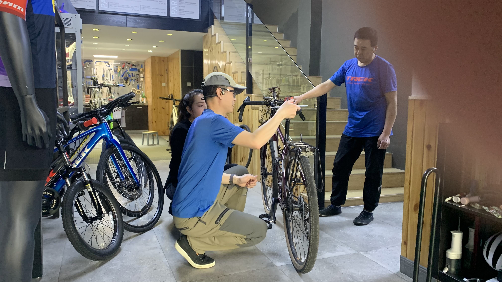
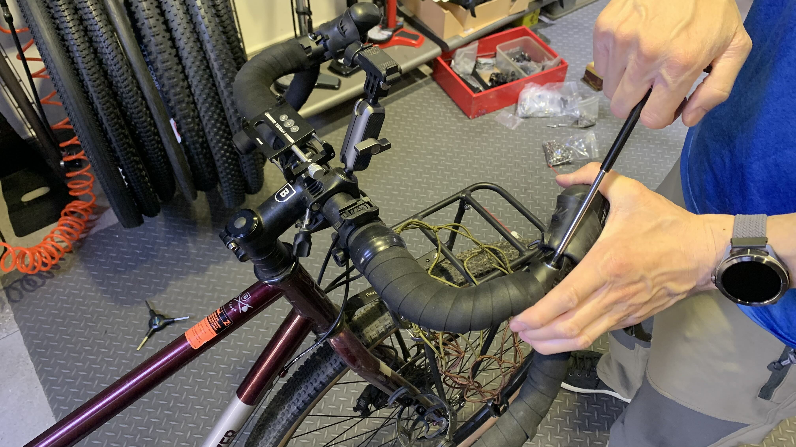
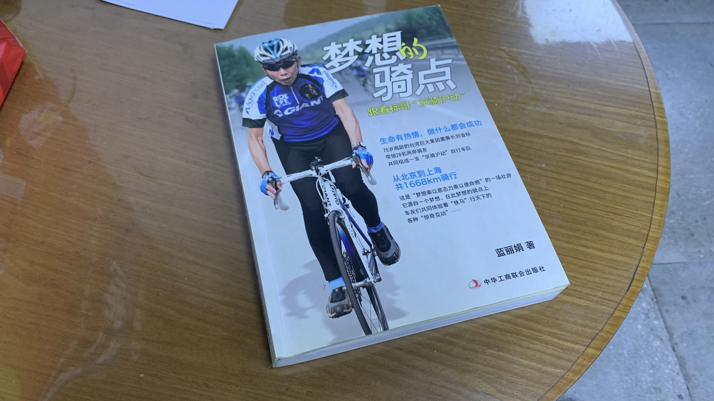
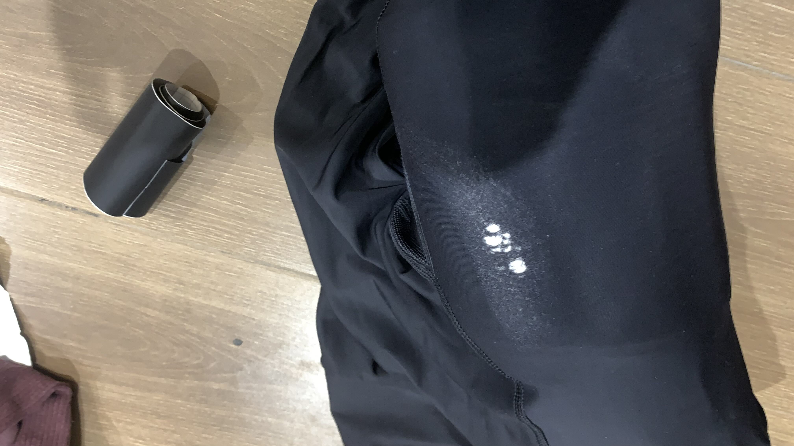
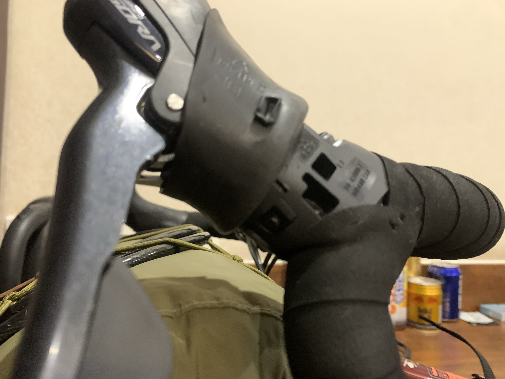
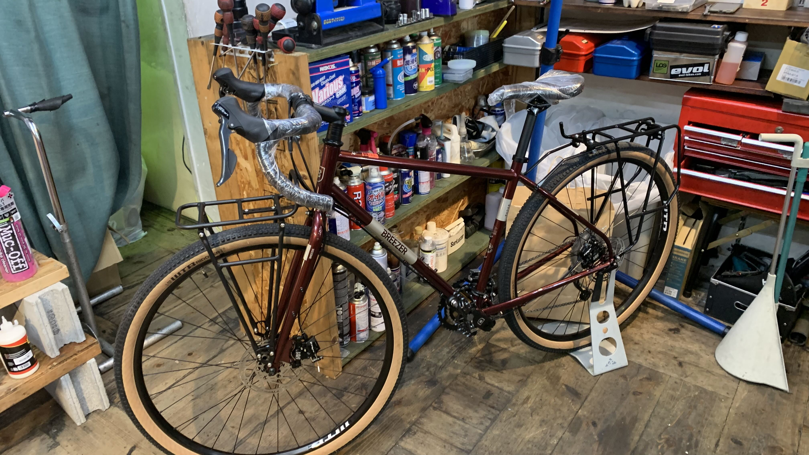

k-Day 041｜從-1開始
沒有測量過你的身體、動態、考量騎乘目的就改動車輛幾何的人，絕對稱不上專業。這句話是聖旨。
一個晚上擔心得睡不著，一早就趕緊到車店準備把二十三號帶回來。到現場時看到技師正在修車，跟他打了招呼，謝謝他昨天幫我換蓋子，並詢問：「昨天維修費用多少錢？」技師要我等老闆來了再問他。
這下可好了，沒人收錢，車子就被扣在這。老闆一到，馬上說要幫二十三號檢查，並由店員和技師幫他拍攝過程。
難道不該是技師來幫我檢查嗎？雖然心裡這麼想，但是被強勢的做法壓制，只好在旁邊盯著。
老闆轉出後貨架的螺絲，很戲劇化地對著鏡頭說：「這個螺絲都歪了！你過來拍，你看，這很危險，路上可能就斷了。」後續老闆開始量鏈條、轉過所有螺絲、拿出水平儀調整椅墊。

正當他對著鏡頭大聲說：「接下來我們要檢查輪框」太白號輪圈在回到台灣時被轉爛的恐懼湧了上來，我堅持說：「我的輪子沒有問題，有晃動我一定會感覺到。」老闆做了樣子轉動一圈，對著鏡頭說：「輪子不會晃動，沒有問題」接著說要開始調整把手。 
「把手有什麼問題嗎？我騎的時候覺得很好。」老闆的理由是原廠的把手設定不符合人體，要改成往內傾的角度。看著老闆徒手將煞變把往下壓，開口問他：「你是怎麼知道要調整到什麼角度？」老闆說看久了就知道。

接著老闆給了我一袋二手備品，跟我說路上用得到就留著，用不到就自己留在飯店。看完備品要我跟他坐著，同時在自己領口別上麥克風，叫來技師拿著手機拍下我們看捷安特創辦人的書的影像，對鏡頭說明他在劉金標先生過世隔天立刻拍了一隻視頻，同時向我和鏡頭展示他寫的輓聯。隨後拿出地圖書，引導我口述自己騎了哪些地方，之後要去哪裡。畢竟拿了備品，也吃了飯，當然是相當配合地演示了。
本以為一切結束了，沒想到老闆提議要去吃午餐，吃完午餐還是要我把車留下來，明天要出發再從他這裡跟他騎出去。
告訴老闆要整理行李，很多東西要重新配重。老闆才同意讓我把車帶走。
同時跟我說：「我給你的東西是私人提供的，但是維修費還是希望你隨意付一些。多少都沒關係，看你的意思。」
只好走到櫃檯詢問店員維修費的行情，她也不知道。問了老闆回來只說：「老闆的意思就是交個朋友，他也不缺錢，你給多少都可以，或是給個吉利數字也可以。」
心裡已經相當煩悶，準備回飯店把被老闆調過的東西都自己弄回來。於是跟店員說：「我實在不想花這個心思，也確實不知道行情，所以你說多少我就直接給你多少。」
店員仍然表示：「就看你覺得應該給多少，10塊、50塊、100、200、500、600都行，我們老闆沒那麼多心思，就看你覺得這服務有多少價值。」
此時我的腦中跑過了二十三號的出鏡價值與最初來店裡主動要求的維修踏板費用，並以交朋友的心扣除了我自己的出鏡費，再問了一次：「10元真的可以嗎？可以的話我就轉給你。」
店員的眼神閃了一下，說：「都看你的心意，多少都沒關係。」於是乎點開支付寶完成了10元轉帳。
臨走前老闆要我記下他的電話，再次體醒我明天早上先騎到他店裡，他會帶著運動相機跟我一起出發。
牽著二十三號往旅店騎，變速一直發出金屬撞擊和摩擦的聲音。上橋時全身重心壓在手掌上，因為貼著內傾的把手，手肘呈現外擴的彎曲姿態。不知為何把手變得很低，身體被往前拉伸。核心和大腿突然找不到施力點，屁股也無法搭在椅墊上畫圓。耳朵聽到鏈條摩擦齒輪的聲音，緊張之下抓緊把手雙腳一陣亂踩。橋上的風讓張開手肘的身體像風帆一樣，迎面而來的風突然變得好巨大。我的身體為什麼收不起來？回程的路上心裡產生巨大的恐懼，明天就要出發了，往後的路才是挑戰的開始，整個身體散掉該如何是好。
回到飯店找了好多影片研究問題所在，變速的聲音應該是把手位置改變影響了張力。握把傾斜的角度可以自己調整。冷靜下來後開始清洗髒衣服，重新安排行李位置。老闆今天調了馬鞍袋的掛勾位置，覺得掛起來重心不太對，又自己調了一次。破掉的壓縮褲先塞入飯店的大浴巾撐開，拿了原本要補帳篷的貼布貼上。

褲子的問題解決了。找出老闆的電話，發了訊息詢問明早可否提早去讓他把把手調回來，沒有收到回覆，於是決定自己動手。

不得不說Breezer的原廠設定真的很舒適，一個多月來沒有一天屁股痛過，身體的每個部位都很適應。今天算是感受到所謂品牌的經驗累積。
前面40天，我的身體逐漸與這個科學數據給予的「普遍最優解」空間融合成最漂亮的動態模式，也確實地體驗到好車能給予的傳動支持。現在開始必須以過去一個月遺留在我身上的身體記憶當作基準，建立最適合我的動態框架。即便他永遠無法回復原廠設定，但他會是我的新戰友。
將自己的動態表象在二十三號的幾何變化上，創造屬於我們自身與經過的場所顯現在我們身上的空間結構，這豈不恰好符合這次計畫的初衷。我這樣安慰著自己。

深夜翻出與二十三號初見時拍下的照片。我會懷念他的。
今日花費： 修車費 10、蛋白粉 115、住宿 80元